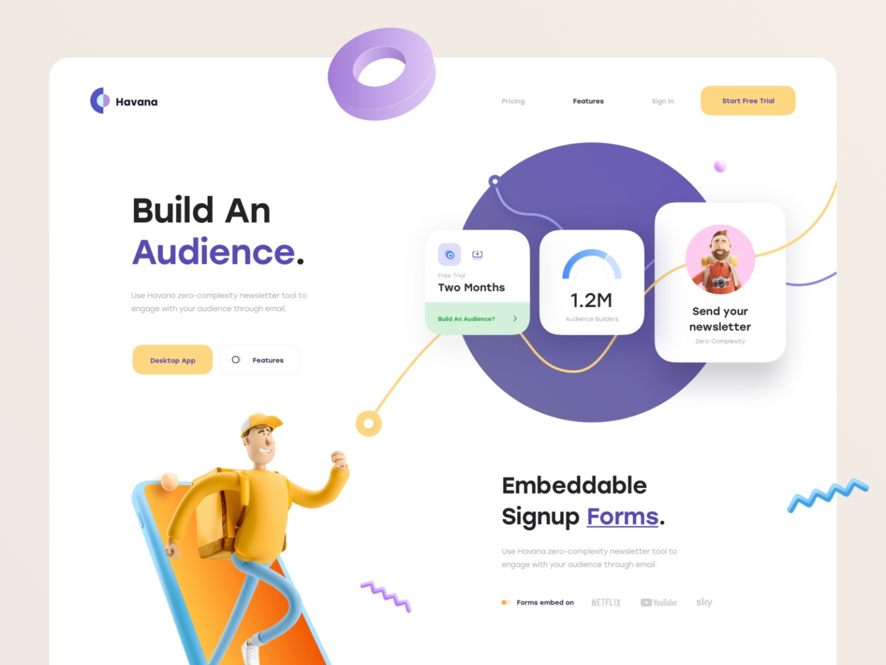
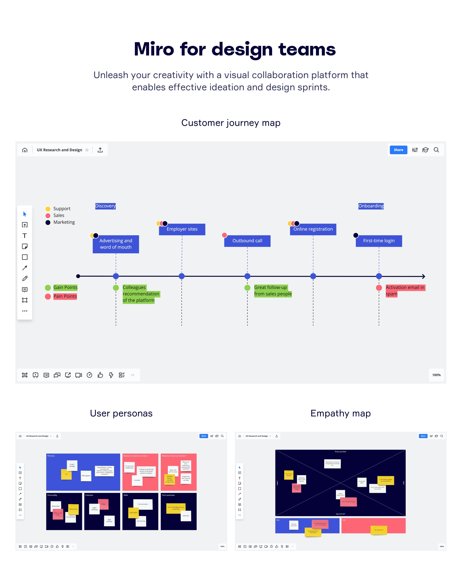
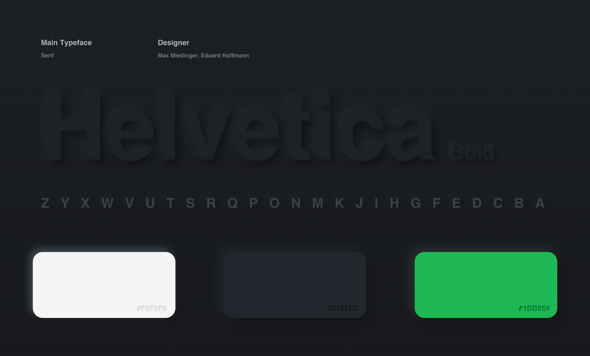
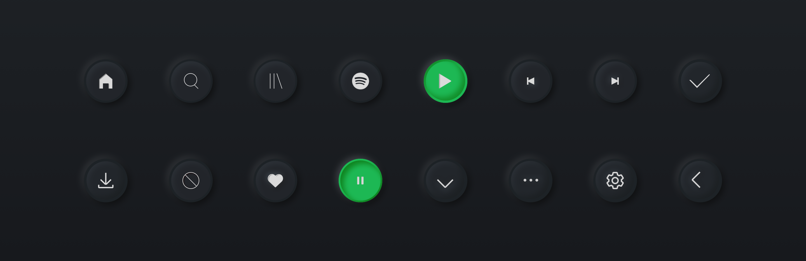
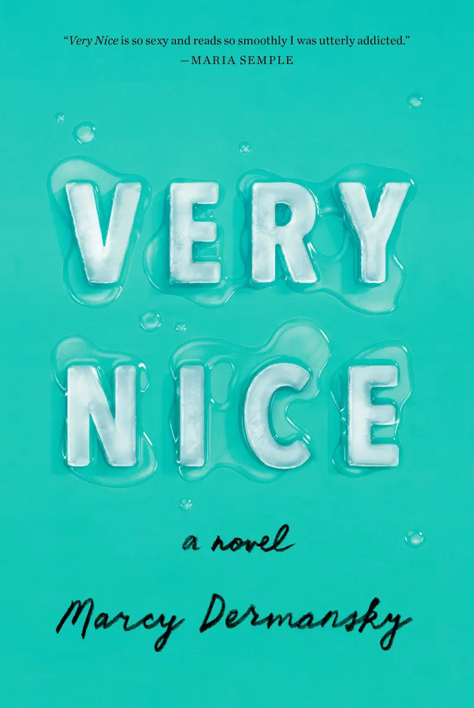
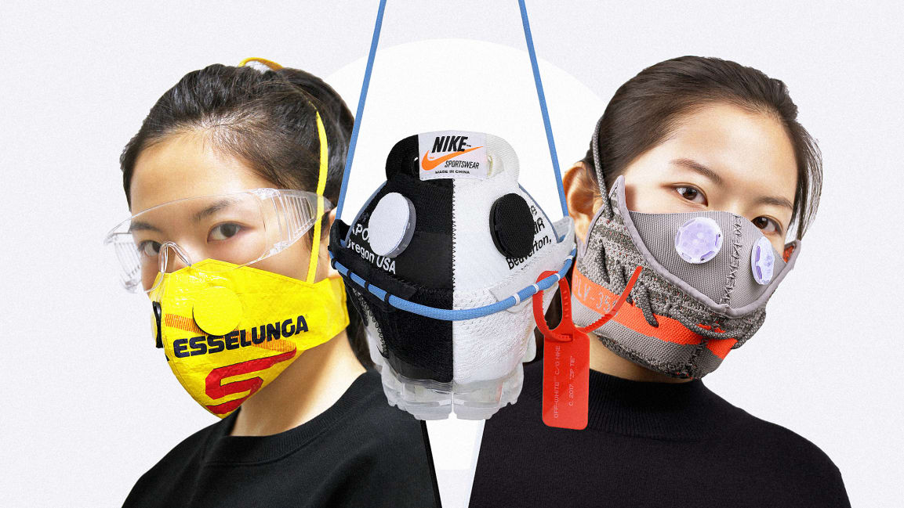

设计周刊 Design Weekly #08
Thu, May 21, 2020
🏷 设计趋势：
产品设计的卡哇伊化
https://vanschneider.com/the-kawaiization-of-product-design
作者 Tobias 对于设计风格的一些观察见解。那些让人产生想捏捏它的产品，是不是也实现了产品的目的？

🏷 设计资源：
Nice Very Nice 优秀的 UI/UX 灵感集合
https://www.niceverynice.com/components
一个设计灵感库，拥有最优秀的UI/UX模式、布局和设计实例。向优秀的人学习，打造更好的产品。

🏷 设计文章
**新拟物风格下的 Spotify Redesign **
https://uxdesign.cc/spotify-in-neumorphism-2d1009d7477c
作者Sangeeta Baishya 使用2020 年大热的设计风格 Neumorphism（新拟物）对 Spotify 进行了的重设计。
不了解新拟物风格的同学，可以在这里 了解一下。


🏷 设计新闻
2019 年那些棒棒哒封面设计
https://kottke.org/20/05/the-best-book-design-of-2019
日前，AIGA公布了2019年出版的年度50本图书/50本封面大赛的获奖名单。
如果想了解更多，请查看纽约时报 、Buzzfeed 和Lithub 上的榜单。

🏷 随便看看
把 Yeezys 变成了5000元的口罩。你也可以**
设计师王志军用一双 Yeezy 350 v2 制作的面具被 MoMA 收购。现在，为了应对COVID-19，他设计了一个新的口罩模板，任何人都可以用身边的纺织品制作自己的高级口罩。他称之为面具学: 每个人都可以做面具。
“我的运动鞋面具就是要让年轻一代用不同的方式重新思考面具与环境的关系，唤醒人们做出一些改变。“他说。
